배관기능장 (2003-03-30 기출문제)
1과목: 임의구분
1. 건축배관에서 가장 높은 급수밸브에서의 필요 최저압력이 0.3kgf/cm2, 1층주관에서 가장 높은 급수밸브까지 수직높이가 8m, 급수밸브까지의 관마찰 손실수두가 3m이면, 1층 주관에서 옥상탱크까지의 최저높이는 얼마인가?
- 5 m
- 7 m
- 9 m
- 14 m
(정답률: 50%)

2. 배수 통기배관의 시공상 주의사항을 바르게 설명한 것은?
- 배수 트랩은 반드시 2중으로 한다.
- 냉장고의 배수는 반드시 간접배수로 한다.
- 배수 입관의 최하단에는 트랩을 설치한다.
- 통기관은 기구의 오버플로우선 이하에서 통기입관에 연결한다.
(정답률: 81%)
3. 특수 통기 배관법 중 소벤트 방법에 관한 설명으로 틀린 것은?
- 색스티아 이음쇠를 이용하여 배수를 선회운동 시켜 소음을 감소 시킨다.
- 공기 분리 이음쇠는 공기와 물을 분리시켜 배수수직관 내부에 공기 코어를 연속적으로 유지시킨다.
- 공기 혼합 이음쇠는 배수 수평 분기관으로부터 들어오는 배수와 공기를 수직관 안에서 혼합하는 역할을 한다
- 공기분리 이음쇠는 내부 돌기, 공기 분리실, 유입구, 통기구, 배출구 등으로 구성되어 있다.
(정답률: 61%)
4. 제조 공정에서 정제된 가스를 저장하여 가스의 품질을 균일하게 유지하면서 제조량과 수요량을 조절하는 것은?
- 정압기(governor)
- 가스 홀더(gas holder)
- 분리기(separator)
- 송급기(feeder)
(정답률: 75%)
5. 도시 가스 배관시 유의할 사항의 설명 중 잘못된 것은?
- 내식성이 있는 공급관은 하중에 견딜 수 있도록 지면으로부터 충분한 깊이로 매설한다.
- 유지 관리상 가능한 경우 콘크리트내 매설을 해주는 것이 좋다.
- 가능하면 곡선 배관은 적게 시공한다.
- 옥내배관은 유지 관리 측면에서 건물 지하에는 배관하지 않는다.
(정답률: 80%)
6. 여러 가지 배관 분야에 많이 쓰이는 바이패스(by-pass)관-을 설치한 다음 예 중 가장 적합한 것은? (단, 끎는 증기 트랩을 나타낸다.)
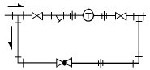
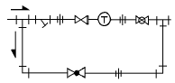
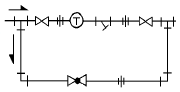
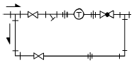
(정답률: 75%)
7. 진공 환수식 증기 난방법에서 저압 증기 환수관이 진공펌프의 흡입구보다 낮은 위치에 있을 때 응축수를 끌어 올리기 위해 관로에 설치하는 것을 무엇이라고 하는가?
- 리프트 피팅(lift fitting)
- 냉각관(Cooling leg)
- 아담슨 조인트(adamson joint)
- 베큐엄 브레이커(vacuum breaker)
(정답률: 89%)
8. 자동화 시스템에서 공정처리 상태에 대한 정보 중 유량, 물체의 유무 등의 정보를 프로세서에 전달하는 제어부분인 자동화의 5대 요소 중 하나인 것은?
- 센서(sensor)
- 네트워크(network)
- 액츄에이터(actuator)
- 소프트웨어(software)
(정답률: 72%)
9. 표준화를 CAD에 적용시 자동화에 적합한 설계기술 업무와 도면작성에 관한 분야로 분류시에 다음 중 설계기술 업무분야인 것은?
- 단순한 도형의 배열이나 원, 곡선 등이 많은 분야
- 도면 작성이 숙련된 기능에 의해 작성되는 분야
- 여러개의 설계조건 중 가장 적합한 것을 골라내는 경우
- 정밀한 도형이나 유사한 도형이 반복되는 작업하는 경우
(정답률: 58%)
10. 창이나 벽, 처마, 지붕에 물을 뿌려 수막을 형성함으로써 인접 건물에 화재가 발생될 때 본 건물의 화재발생을 예방하는 설비는?
- 스프링 클러
- 서지 업서버
- 프리 액션설비
- 드랜처
(정답률: 92%)
11. 공기조화 설비에서 덕트 그릴에 댐퍼를 부착하여 풍량을 조절할 수 있으며, 벽면이나 천정에 부착하여 급기구로 사용하는 것은?
- 루버(louver)
- 디퓨즈(diffuser)
- 레지스터(register)
- 애니모스탯(anemostat)
(정답률: 59%)
12. 다음 보일러 내 부속장치의 역할에 관한 설명 중 올바르게 설명된 것은?
- 과열기 : 과열증기를 사용함에 따라 포화증기가 된것을 재가열한다.
- 절탄기 : 연도 가스에서의 여열로 급수를 가열한다.
- 공기 예열기 : 연도 가스에서의 여열로 전열 면적을 더욱 뜨겁게 한다.
- 탈기기 : 물에 다량 함유된 염화물을 제거하기 위한 증류수를 만든다.
(정답률: 80%)
13. 열팽창에 의한 배관의 이동을 구속하거나 제한하는 장치 중 배관의 지지점에서 이동 및 회전을 방지하기 위하여 배관계의 일부를 완전히 고정하는 지지장치는?
- 스톱(stop)
- 가이드(guide)
- 앵커(anchor)
- 행거(hanger)
(정답률: 59%)
14. 다음 중 배관의 구배 조정에 가장 적합한 것은?
- 바닥벤드
- 터언버클
- 새들벤드
- 로울러 벤드
(정답률: 69%)
15. 화학세정 작업에서 성상이 분말이므로 취급이 용이하고 비교적 저온(40℃ 이하)에서도 물의 경도 성분을 제거할 수 있는 능력이 있으므로 수도설비 세정에 적합한 것은?
- 염산
- 설퍼민산
- 알콜
- 트리클로 에틸렌
(정답률: 78%)
16. 동일한 재질과 호칭경인 동관 표준규격의 종류 중 가장 관두께가 크기 때문에 가장 큰 상용압력에 사용될 수 있는 형은?
- K
- L
- M
- P
(정답률: 86%)
17. 다음 중 경질 염화비닐관 냉간용 이음쇠의 형식에 속하지 않는 것은?
- TS식
- HI식
- H식
- 편수 칼라식
(정답률: 56%)
18. 다음 증기 트랩의 종류 중 응축수의 부력을 이용, 밸브를 개폐하여 간헐적으로 응축수를 배출하며,하향식과 상향식으로 구분되는 트랩은?
- 버킷 트랩
- 디스크형 트랩
- 온도 조절 트랩
- 바이패스형 트랩
(정답률: 69%)
19. 다음 중 합성수지류 패킹 재료인 것은?
- 메커니컬 시일
- 모넬메탈
- 하스텔로이
- 테프론
(정답률: 86%)
20. 다음 트랩의 종류 중 배수용 트랩인 것은?
- 플로우트 트랩(float trap)
- 벨로우즈 트랩(bellows trap)
- 열역학적 트랩(disc trap)
- 드럼 트랩(drum trap)
(정답률: 72%)
2과목: 임의구분
21. 글로브밸브에서 니들밸브에 대한 설명으로 가장 적합한 것은?
- 디스크의 형상은 원뿔 모양이며, 극히 유량이 적거나 고압일 때 사용된다.
- 유체의 저항을 감소시킬 목적으로 밸브통을 중심선에 대해 45∼60° 경사시킨 것이다.
- 유체의 흐름을 직각 방향으로 바꾸기 위해 사용된다.
- 밸브를 완전히 열면 밸브본체 속은 지름과 같은 단면으로 유체의 저항이 작다.
(정답률: 66%)
22. 다음 중 고압 배관용 탄소 강관의 표시 기호는?
- SPPS
- SPPH
- SPP
- SPHT
(정답률: 72%)
23. 동 및 동합금관의 특징이 아닌 것은?
- 알카리성에 내식성이 강하다.
- 연수에 내식성이 강하다.
- 유기약품에 침식되지 않는다.
- 암모니아, 초산등에 심하게 침식한다.
(정답률: 50%)
24. 원심력 철근 콘크리트관에 대한 설명 중 틀린 것은?
- 용도에 따라 보통압관과 압력관이 있다.
- 일반적으로 에터니트관이라고 한다.
- 관끝 형상에 따라 A형, B형, C형의 3종류로 나눈다.
- 원형으로 조립된 철근을 형틀에 넣고 회전하며 콘크리트를 주입한 것으로 송수관용과 배수관용이 있다.
(정답률: 60%)
25. 가요관이라고도 하며 스테인레스강 또는 인청동의 가늘고 긴 벨로즈의 바깥을 탄력성이 풍부한 구리망, 철망 등으로 피복하여 보강한 신축 이음쇠로 방진용으로도 사용이 가능한 것은?
- 플랙시블 튜브
- 플랙시블 커넥터
- 슬리브형 복식 신축 이음쇠
- 벨로즈형 단식 신축 이음쇠
(정답률: 73%)
26. 다음 동관용 공구 중 관의 끝을 확관하는 데 사용하는 주 공구는?
- 사이징 툴(sizing tool)
- 플레어링 툴(flaring tool)
- 튜브 벤더(tube bender)
- 익스펜더(expender)
(정답률: 62%)
27. 다음 중 일반적인 주철관 접합법이 아닌 것은?
- 플랜지 접합
- 타이톤 접합
- 빅토릭 접합
- 심플렉스 접합
(정답률: 72%)
28. 일반적인 폴리에틸렌관의 이음방법인 것은?
- 인서트 이음
- 콤포이음
- 테이퍼 코어이음
- 소켓이음
(정답률: 71%)
29. 폴리에틸렌관의 이음방법 중 관끝의 바깥쪽과, 이음관의 안쪽을 동시에 가열 용융하여 이음하는 방법인 것은?
- 코어 플랜지 이음
- 인서트 이음
- 용착 슬리브 이음
- 테이퍼 조인트 이음
(정답률: 87%)
30. 스트랩 파이프 렌치에 관한 설명으로 올바른 것은?
- 긴 핸들과 다른 죠(jaw)의 끝에 연결된 체인으로 연결되어 있다.
- 업셋 파이프 렌치라고도 하며 크기는 몸체의 길이로 표시한다.
- 스트랩으로 파이프를 돌려야 하는 반대방향으로 파이프를 감아서 스트랩의 끝을 새클로 조이므로 상처가 남지 않는 것이 특징이다.
- 강력급과 보통급의 2가지가 있으며 죠(jaw)에는 톱니가 있어 모서리가 둥굴게 되어 보통의 렌치를 사용할 수 없는 볼트, 너트에 적합하다.
(정답률: 68%)
31. 강관의 슬리브 용접시 슬리브의 길이는 관경의 몇 배로하는 것이 가장 적당한가?
- 1.2 ∼ 1.7배
- 4배
- 2.0 ∼ 2.5배
- 7배 이상
(정답률: 92%)
32. 동관의 압축이음(flare joint)에 대한 설명으로 틀린 것은?
- 관 지름 20mm 이하의 동관을 이음할 때 사용한다.
- 기계의 점검, 보수 기타 분해할 필요가 있는 곳에 사용한다.
- 한쪽 동관 끝을 나팔형으로 넓히고 슬리브 너트로 이음쇠에 고정한 후 풀림을 방지하기 위하여 더블너트를 체결한다.
- 강관에서의 플랜지 이음과 같은 플랜지를 사용한다.
(정답률: 70%)
33. 연삭작업시 안전 수칙으로 올바른 것은?
- 작업기간 단축을 위해 숫돌의 측면을 사용한다.
- 보안경은 작업기간이 짧은 때는 쓰지 않아도 좋다.
- 숫돌 커버는 공작물의 형상에 따라 장착하지 않을 수 있다.
- 연마면의 먼지나 쇳가루는 반드시 청소한 후 작업해야 한다.
(정답률: 86%)
34. 길이 30cm 되는 65A 강관의 중앙을 가스절단을 한 후 절단부위를 다루는 방법으로 가장 안전한 방법은?
- 손가락을 끼워서 든다.
- 장갑을 끼고 손으로 잡는다.
- 단조용 집게나 플라이어로 찝는다.
- 절단 부위에서 가장 먼곳을 손으로 잡는다.
(정답률: 94%)
35. 안전 색채 중 적색 표시에 해당하지 않는 것은?
- 위험
- 정지
- 통로
- 화재 경보함
(정답률: 93%)
36. 0℃ 의 물 1 ㎏f을 100℃ 의 포화증기로 만드는데 필요한 열량은 몇 ㎉ 인가?
- 100
- 180
- 539
- 639
(정답률: 59%)
37. 공기의 기본적 성질에서 건구온도, 습구온도, 노점온도가 모두 동일한 습도로 올바른 것은?
- 절대 습도 100 %
- 절대 습도 50 %
- 상대 습도 100 %
- 상대 습도 50 %
(정답률: 85%)
38. 밑면적이 3m2, 자유 표면으로 부터 깊이가 20m 되는 원통 용기에 물이 들어있을 경우 용기의 밑면에 작용하는 전압력은 몇 톤(ton)인가?
- 2
- 6
- 60
- 90
(정답률: 64%)
39. 용접에서 잔류응력의 완화법이 아닌 것은?
- 기계적 응력 완화법
- 저온 응력 완화법
- 담금질법
- 피닝법
(정답률: 60%)
40. 산소와 프로판 가스 절단시 혼합비로 프로판 가스 1 에 대하여 산소는 다음 중 어느 정도가 가장 적합한가?
- 1.0
- 2.0
- 3.0
- 4.5
(정답률: 68%)
3과목: 임의구분
41. 정격2차 전류 200A, 정격 사용률이 40% 인 아크 용접기로 150A의 용접전류를 사용시 허용 사용률은 약 몇 %인가?(오류 신고가 접수된 문제입니다. 반드시 정답과 해설을 확인하시기 바랍니다.)
- 53
- 65
- 71
- 75
(정답률: 31%)
42. MiG 용접에 대한 장· 단점 설명으로 틀린 것은?
- 3mm 이하의 박판 용접에 적합하다.
- 비교적 아름답고 깨끗한 비드를 얻을 수 있다.
- 바람의 영향을 받기 쉬우므로 방풍대책이 필요하다.
- 수동 피복 아크용접에 비해 용착효율이 높아 고능률 적이다.
(정답률: 64%)
43. 다음 용접결함 중 내부결함에 속하지 않는 것은?
- 기공
- 언더컷
- 은점
- 슬래그 혼입
(정답률: 82%)
44. 탄산가스 아크용접(CO2)의 특징 중 틀린 것은?
- 용착 금속의 성질이 양호하다.
- 보통 아크용접보다 속도가 느리다.
- 용접 비용이 수동용접에 비해 싸다.
- 가시 아크이므로 시공이 편리하다.
(정답률: 75%)
45. 배관도면을 작성할 때 건물의 바닥면을 기준선으로 하여 높이를 표시하는 기호는?
- EL
- GL
- FL
- CL
(정답률: 78%)
46. 오른쪽 그림은 등각입체 배관도를 나타낸 것이다. 수평선과 X, Z 축이 이루는 각도 θ 는 몇도인가?
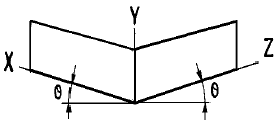
- 15°
- 30°
- 45°
- 60°
(정답률: 71%)
47. 파이프 표면에 파랑색이 칠해져 있는 경우 파이프 내의 유체는?
- 물
- 증기
- 공기
- 가스
(정답률: 89%)
48. 일반적인 배관 도면에서 치수나 기호, 문자의 표시법에 대한 설명 중 잘못된 것은?
- 길이치수는 ㎜ 로 나타내며 단위 기호는 생략한다.
- 관내를 통하는 유체의 종류가 수증기의 경우 영문자 S 를 사용한다.
- 고온 배관용 탄소강관의 기호 표시는 SPPA 로 한다.
- 배관의 호칭 지름은 호칭 치수 다음에 밀리 단위는 A 를, 인치 단위는 B 를 붙혀서 표시한다.
(정답률: 78%)
49. 관 끝 부분에
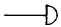
로 도시된 배관 도시기호는?- 막힘 플랜지
- 기수 분리기
- 용접식 캡
- 점검문
(정답률: 87%)
50. 난방용 방열기 기호에서 W - V 가 의미하는 뜻으로 다음 중에서 가장 적합한 것은?
- 벽거리 세로형
- 2 주형 세로형
- 벽거리 가로형
- 2 주형 가로형
(정답률: 66%)
51. 보기와 같이 도시된 평면도를 입체도로 올바르게 표시한 것은?
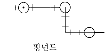
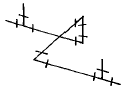
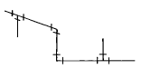
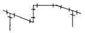
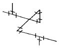
(정답률: 80%)
52. 라인 인덱스(line index)에 4-2B-N-15-39-CINS 로 기재되어 있는 경우 배관의 관경을 표시한 것은?
- 4
- 2B
- 15
- 39
(정답률: 69%)
53. 보기 용접 기호의 설명으로 틀린 것은?
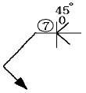
- 완전 맞대기 용접
- 그루브 깊이 7mm
- 그루브 각도 45도
- 루트 간격은 0mm
(정답률: 64%)
54. 배관 용접부에 방사선 투과시험을 하라고 할 경우에 표시 하는 기호는?
- VT
- UT
- CT
- RT
(정답률: 85%)
55. 그림의 OC곡선을 보고 가장 올바른 내용을 나타낸 것은?
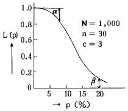
- α : 소비자 위험
- L(p) : 로트의 합격확률
- β : 생산자 위험
- 불량율 : 0.03
(정답률: 72%)
56. 품질관리 활동의 초기단계에서 가장 큰 비율로 들어가는 코스트는?
- 평가코스트
- 실패코스트
- 예방코스트
- 검사코스트
(정답률: 84%)
57. PERT/CPM에서 Network 작도시 碇은 무엇을 나타내는가?
- 단계(event)
- 명목상의 활동(dummy activity)
- 병행활동(paralleled activity)
- 최초단계(initial event)
(정답률: 65%)
58. 신제품에 가장 적합한 수요예측 방법은?
- 시계열분석
- 의견분석
- 최소자승법
- 지수평활법
(정답률: 57%)
59. 관리도에 대한 설명 내용으로 가장 관계가 먼 것은?
- 관리도는 공정의 관리만이 아니라 공정의 해석에도 이용된다.
- 관리도는 과거의 데이터의 해석에도 이용된다.
- 관리도는 표준화가 불가능한 공정에는 사용할 수 없다.
- 계량치인 경우에는
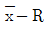
관리도가 일반적으로 이용 된다.
(정답률: 60%)
60. 다음은 워크 샘플링에 대한 설명이다. 틀린 것은?
- 관측대상의 작업을 모집단으로 하고 임의의 시점에서 작업내용을 샘플로 한다.
- 업무나 활동의 비율을 알 수 있다.
- 기초이론은 확률이다.
- 한 사람의 관측자가 1인 또는 1대의 기계만을 측정한다.
(정답률: 73%)
먼저, 가장 높은 급수밸브에서의 필요 최저압력이 0.3kgf/cm2이므로, 이 압력을 유지하기 위해서는 1층 주관에서 가장 높은 급수밸브까지의 수직높이와 관마찰 손실수두를 고려하여 적어도 3.3m의 높이가 필요하다.
따라서, 1층 주관에서 옥상탱크까지의 최저높이는 8m(1층 주관에서 가장 높은 급수밸브까지의 수직높이) + 3.3m(가장 높은 급수밸브에서의 필요 최저압력을 유지하기 위한 높이) = 11.3m 이상이어야 한다.
하지만, 이 문제에서는 보기 중에서 11.3m보다 큰 값인 14m이 정답으로 주어졌다. 이는 1층 주관에서 옥상탱크까지의 최저높이를 구하는 과정에서 고려하지 않은 다른 요소들(예: 수압강하 등)이 있을 수 있기 때문이다. 따라서, 이 문제에서는 14m가 정답으로 주어졌다.